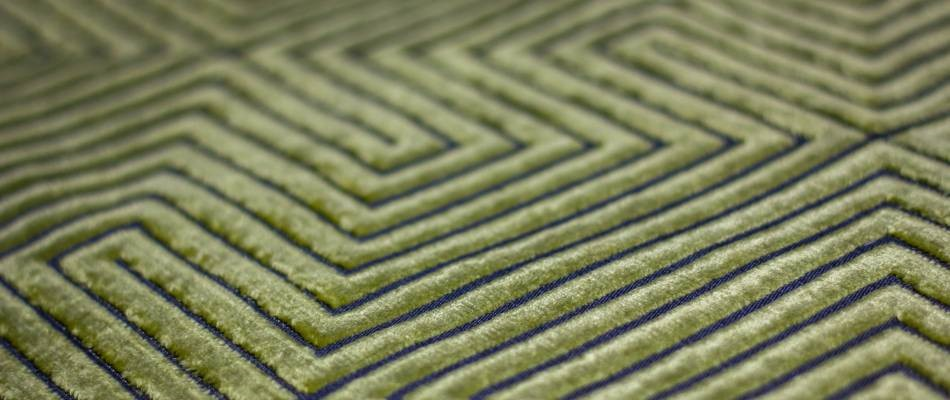
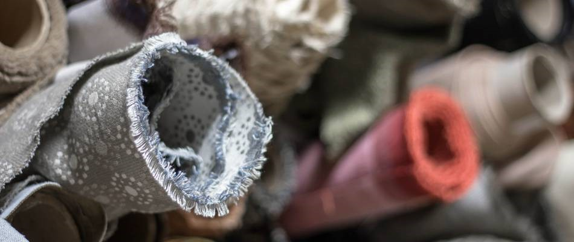
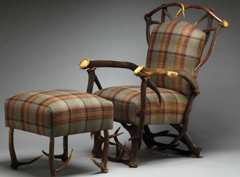
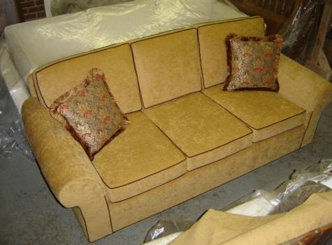

Upholstery



Upholstery is a major undertaking for any kind of cushioned or padded project. At Ablyss, we understand the craftsmanship that goes into quality upholstery and are happy to provide quality work for all of your upholstery needs.
Our Upholstery Shop Services
At Ablyss, our skilled upholsterers have more than 100 years of combined experience working with high-end designer pieces as well as precious antiques and family heirlooms. This experience means we can work with hide, leather, vinyl and countless other fabrics while focusing on meticulous stitching and top-notch results. Our expert pattern making makes Ablyss an unrivaled among upholstery shops.
We commonly provide upholstery services for:
Sofas
Chairs
Ottomans
Headboards
Antique Settees
Custom projects and pieces
Our upholstery shop provides countless services for all upholstered items, new, old and vintage while emphasizing quality work and craftsmanship throughout the process.


DIY Versus Professional Upholstery
Upholstery work isn't an easy feat. There are several reasons to consider choosing a professional upholstery shop - like Ablyss - over tackling a do-it-yourself upholstery project.
Some pieces require specialty approaches. Upholstery is an old world skill that takes time and practice to master. At Ablyss, we have decades of experience that allow our upholsterers to know exactly how to approach each project. With a keen knowledge on quality techniques and materials, we can determine the best way to upholster an item or repair upholstery damage. In the long run, our skills save you time and money by completing the project correctly the first time around.
Upholstery materials can be costly. The cost of fabric, trims and other materials needed in the upholstery process can add up quickly. This is because thick, quality materials that endure daily wear and tear must be used to ensure the cost of an upholstered item is worth the investment! Unfortunately, many inexperienced DIYers learn the hard way how costly a mistake can be when working with upholstery materials. A wrong cut or poor stitching that leads to tears, or even a need to redo the entire project can end up costing more than a professional upholsterer's bill.
Upholstery projects take time. Like many quality services and projects, upholstery takes a bit of time, and often more than an inexperienced do-it-yourselfer has. At Ablyss, our experienced upholstery team is able to perform custom upholstery creation and repairs with ease and skill, returning your item to you in less time than it would take you to do the same project. That's simply because of our knowledge and decades of upholstery experience, which translates to a higher quality item.
Let Ablyss Help With Your Upholstery Needs
Our attention to detail and expert pattern matching skills are just two reasons to consider selecting Ablyss for your next upholstery project. We gladly work with you to determine your upholstery needs and tastes to produce a high-end product that you'll be glad to not only use, but show off. Interested in our upholstery shop services? Contact us for more information.